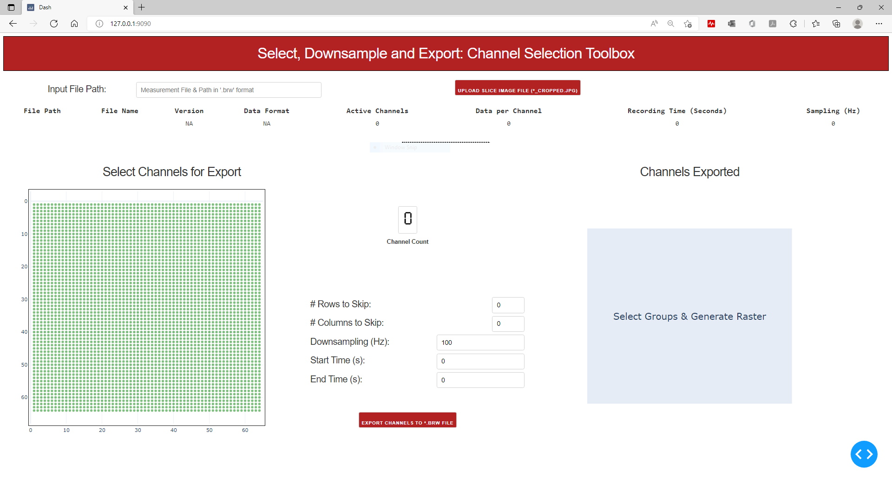
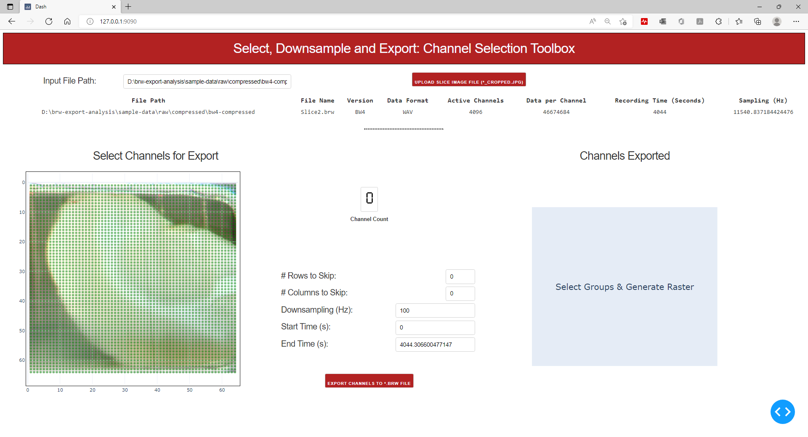
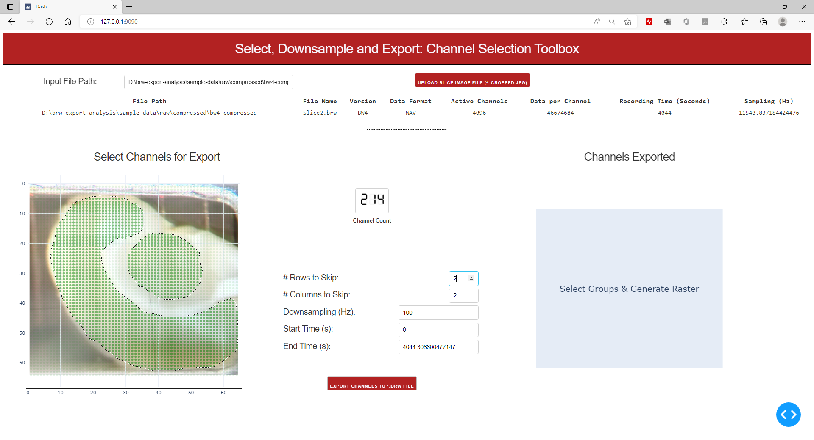
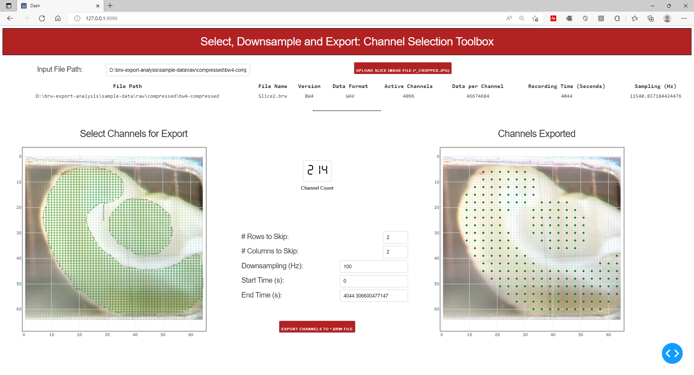

Pre-processing BrainWave Recording
In general the BrainWave measurement software records all 4096 channels at 11 KHz or 20KHz, Wavelet Compressed format, in this section we provide additional support files to select and export a set of channels to the uncompressed RAW hdf5 file,that will be accepted in the Xenon LFP Analysis GUI. This also includes uploading the slice image file to select channels. The code files generally works for measurements collected using the BrainWave4 and BrainWave5 software version, both on the RAW and WaveletCompressed files, if you do not have a slice image you can upload a dummy image file to get started.
Selecting channels to export
To export channels you first need to run the Dash application and then follow through on the steps listed below.
Run the export:toolbox Dash Application
Download or clone the code-files from GitHub-Repository, run the below command using the full path of the code file HD-MEA-DownSample.py.
>python C:\\Downloads\\xenon-lfp-analysis\\code-files\\3Brain-processing\\ExportToHDF5-ChannelSelection.py
Copy and paste http://127.0.0.1:9090/ in the browser (Firefox or Chrome or Edge).
- Once the Dash application is running it should look as below.:
- 
- You will need two inputs, first the full folder path and file name and second an image file to over lay on the slice using the upload image icon, to upload the cropped slice image (if you don’t have a slice image you still need to upload a dummy image to get to the next step).:
- 
- You can now use the lasso tool or box tool to select channels to export, you can hold down the shift key to select multiple regions or un-check selected channels.
- 
- Once you have selected the channel, you can set the downsampling frequency, or reduce the number of channels in the region using the options provided and click Export Channels to *.brw File.
- 
{kind=link}
{kind=link}
{kind=link}
{kind=link}